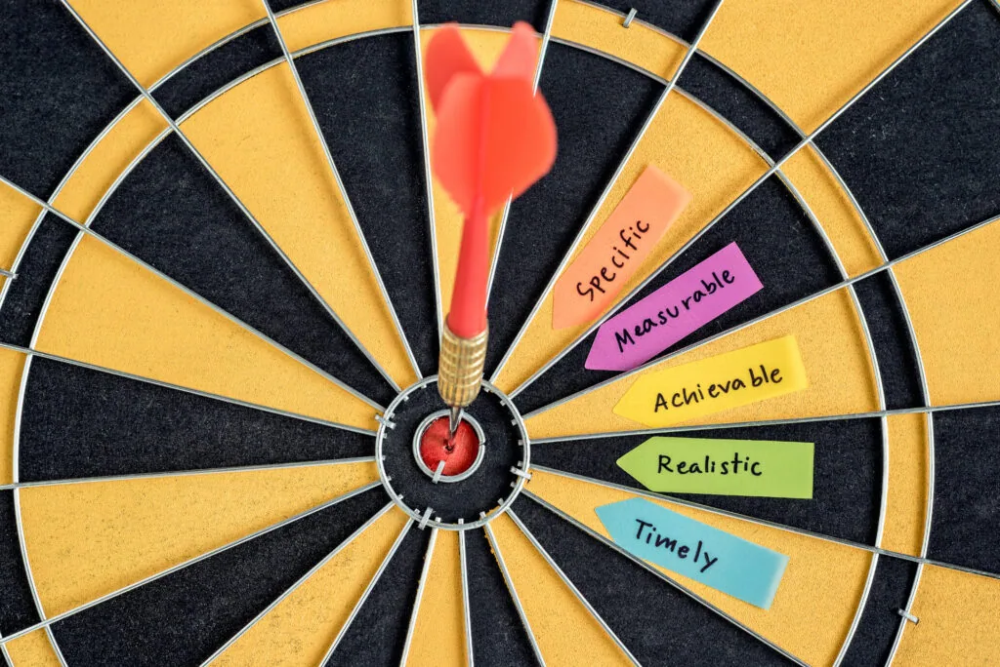

As a business owner, you’re always looking for ways to reach new customers and grow your business. One of the most effective ways to do this is through a killer marketing strategy. But what exactly is a marketing strategy, and how do you create one that will drive results? In this article, we’ll answer these questions and provide you with a comprehensive guide to creating a killer marketing strategy that will help you outrank your competition.
Creating Your Killer Marketing Strategy
Now that you understand the key elements of a successful marketing strategy, it’s time to create your own killer marketing strategy. Here are the steps you need to follow:
Step 1: Define Your Target Audience
The first step in creating your killer marketing strategy is to define your target audience. Who are they, and what are their needs and wants? What motivates them to make a purchase, and what do they value? The more you know about your target audience, the better you can tailor your marketing strategy to their needs.
Step 2: Identify Your Unique Selling Proposition

Your unique selling proposition (USP) is what sets your business apart from your competitors. It’s the reason why customers should choose you over everyone else in the market. To identify your USP, ask yourself:
- What makes your business unique?
- What do you offer that your competitors don’t?
- What are the benefits of choosing your business over others in the market?
Once you’ve identified your USP, make sure it’s front and center in all your marketing materials.
Step 3: Set Clear Goals and Objectives

To create a killer marketing strategy, you need to set clear goals and objectives. What do you want to achieve with your marketing efforts, and how will you measure success? Some common goals for marketing strategies include:
- Increasing brand awareness
- Generating leads
- Driving sales
Make sure your goals are specific, measurable, and achievable within a certain timeframe.
Step 4: Choose the Right Channels and Tactics
Once you’ve defined your target audience, identified your unique selling proposition, and set clear goals and objectives, it’s time to choose the right channels and tactics for your marketing strategy. This will depend on your target audience and your business goals. Some effective marketing channels and tactics include:
- Social media marketing: Use social media platforms like Facebook, Twitter, and Instagram to connect with your target audience and promote your business.
- Email marketing: Send targeted emails to your subscribers to keep them engaged and drive conversions.
- Content marketing: Create high-quality content, such as blog posts, infographics, and videos, that educates and engages your target audience.
- Paid advertising: Use paid advertising platforms like Google Ads and Facebook Ads to reach new customers and drive conversions.
- Influencer marketing: Partner with influencers in your industry to promote your business and reach a wider audience.
Step 5: Develop a Content Plan
Content is the backbone of any successful marketing strategy. To create a killer marketing strategy, you need to develop a content plan that aligns with your goals and objectives. Your content plan should include:
- Topics and themes that are relevant to your target audience
- Formats, such as blog posts, videos, and infographics
- A content calendar to help you stay organized and consistent
Step 6: Implement and Evaluate Your Marketing Strategy
Once you’ve developed your marketing strategy, it’s time to implement it and start promoting your business. Make sure you track your progress and measure the success of your marketing efforts. This will help you identify what’s working and what’s not, so you can make adjustments as needed.
Conclusion
Creating a killer marketing strategy takes time and effort, but the results are worth it. By understanding your target audience, defining your unique selling proposition, setting clear goals and objectives, and choosing the right channels and tactics, you can create a marketing strategy that drives results and helps you outrank your competition. Remember to develop a content plan and evaluate your marketing efforts regularly, so you can stay ahead of the game and keep growing your business.